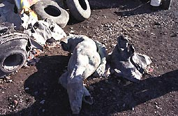
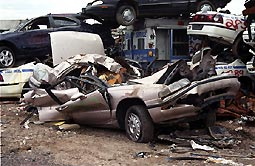
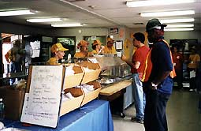

Fresh Kills
World Trade Center Recovery Operation on Staten
Island |
|
| |
|
Fresh Kills, the world’s largest waste disposal
structure was officially closed to New York’s garbage in March of
2001. Crews continued to work building roads, grading banks, planting
pipes for the release of gas, capping 180-foot mounds and seeding them
with grass.
Dennis Diggins, Director of the Landfill said that
“it was about two o'clock in the morning on September 12th that
they decided that Fresh Kills was going to be the destination for material
coming from Ground Zero for a search.” The Fresh Kills Landfill
became the world’s largest open-air crime lab. Over 1000 people
from federal, state and city agencies worked under windy, dusty, cold
or hot conditions to search for evidence, personal effects and human remains.
Everyone was hoping to find something that would bring closure to a grieving
family.
According to Ray Ragusa, a heavy equipment operator,
“this was like a miracle… the terrorists never knew that we
would be ready for this. I mean, nobody in the world could have known
that the landfill would close and it would get ready for this World Trade
Center.”

|
Inspector James Luongo,
incident commander at Fresh Kills, recalls the beginning.
Inspector James Luongo
describes “The Hill” and unforeseen challenges.
|
|
“The World Trade Center is in this bucket”
– Ray Ragusa
 Over
1.8 million tons of debris were sifted through to try to recover and identify
people who were lost. Debris from Ground Zero was barged and trucked to
Fresh Kills. Police, Fire department and FBI personnel spent hours at
a time looking at the conveyor belts, collecting human remains and personal
effects. In ten months over 4200 human remains were collected and 167
people were identified. DNA testing continues today at the New York Medical
Examiner’s Office.
|
Ray Ragusa, heavy
equipment operator, realizes that “this is the World Trade Center
I have in this bucket”.
Richard Marx, FBI,
says that forms in the rubble were not always what you’d expect.
Timothy Broome, production
monitor for Phillips & Jordan, describes the horrors of finding
“unmentionable things” .
|
|
“Cars are like sponges”
– Gerry Fornino
 Over
1300 cars were transported to Fresh Kills because it is standard practice
to investigate cars that were in the vicinity of a blast. Gerry Fornino,
a bomb technician for the FBI, said, “we know from experience that
these cars become sponges, and that they absorb tremendous amounts of
evidence.” The cars absorbed parts of airplanes and many other types
of debris. Since there was not much question as to the cause of the disaster,
the investigation became a humanitarian effort to recover personal effects
and human remains.
|
Gerry Fornino, FBI
bomb technician, says that “aluminum melted like tear drops”.
Gerry Fornino searched
cars belonging to people he knew.
Jeff Struble, Department
of Sanitation, recalls a birthday present found in a car.
|
"Our heart just goes out to them"
– Sue Halk
 According
to Richard Marx, FBI, for most workers at Fresh Kills, every day was September
12th. While most people went on with their lives and tried to recuperate,
workers at Fresh Kills faced the loss day after day. Nevertheless, a tremendous
spirit of giving marked the recovery operation. Volunteers from across
the country came to feed those searching. Workers offered tremendous support
to one another by talking and unremittingly gave of themselves.
|
Jeff Struble, Department of Sanitation,
describes the support given to a fellow worker who lost a son.
Madeline Jackson and Sue
Halk, Arkansas Southern Baptist Disaster Relief Team, talk about
serving workers at The Hill Top Cafe.
Gerry Fornino, FBI, empathizes with
fellow bomb technician who lost his partner, a dog named Sirius.
|
Edited by Elinoar Astrinsky
Interviews conducted by Elinoar Astrinsky and Jamie York
Special thanks to:
Special Thanks to Amy Weinstein – Associate
Curator at the New
York Historical Society, Jamie York, the New
York State Museum.
Very Special Thanks to all who agreed to share their
stories: James Luongo – New York Police Department Inspector, Richard
Marx – FBI Special Agent in Charge, Gerald Fornino – FBI Special
Agent, Dennis Diggins – Director of the Fresh Kills Landfill, Timothy
Broome, Norman Halk, Sue Halk, Madelene Jackson, Ray Ragusa, Jeff Struble,
Robert Fawcett, Edward Sferrazza, Teresa Gregorio, Randy Hawes, Matthew
Ouellette, Faith Schwartz, Medicus Smith, Salvatore Taffano, William Taylor,
and Gary Tibbs.

If you were working at Fresh Kills during the
recovery operation and want to share your story with us please call the
Sonic Memorial Line, 877-894-8500, or email us at info@sonicmemorial.org.
|
Click on any of the photos to
view a larger image.
photos courtesy of:
Elinoar Astrinsky, Mark Schaming, Craig Williams and the New York State
Museum Collection
|